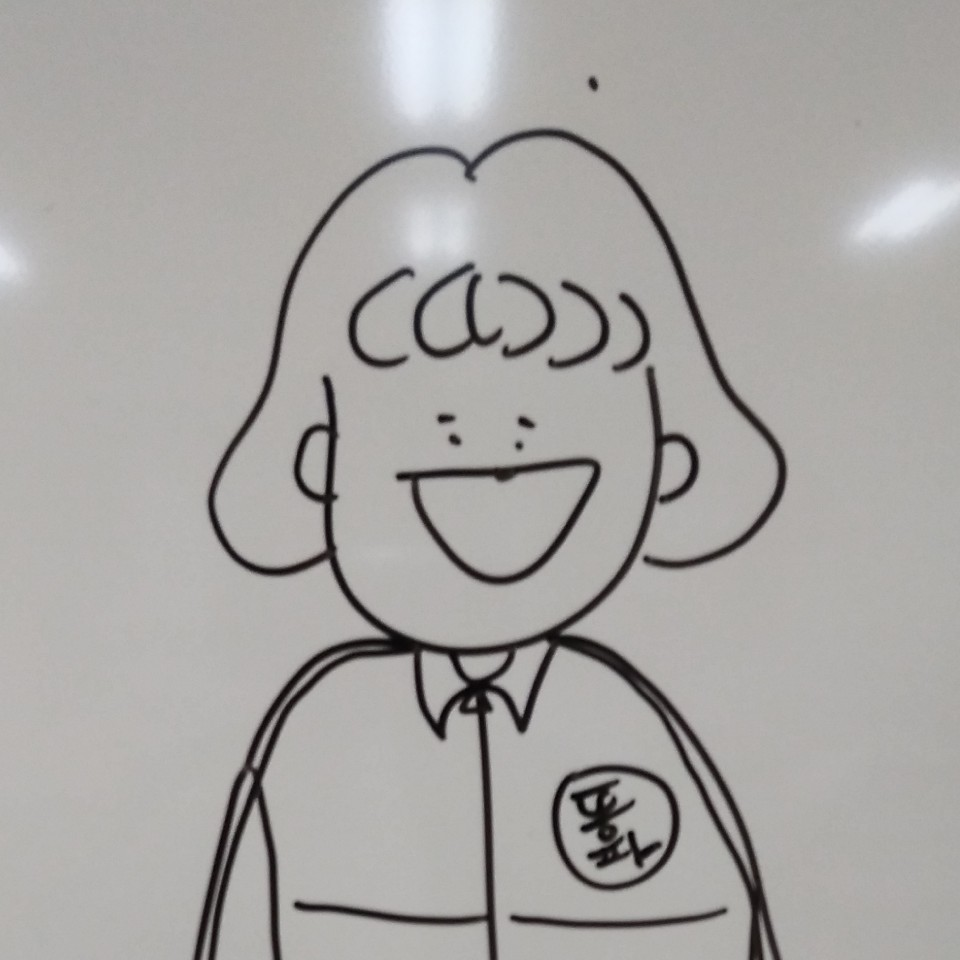

안녕하세요! 동덕여대 1학년 김세정 자기소개 페이지입니다.
많이 부족한 실력이지만, 열심히 만든 페이지이니 재미있게 봐주세요ㅎㅎ. 저는 컴퓨터학과에 다니고 있고, 어떤 분야일지는 아직 모르겠지만 미래에 개발자가 되고 싶습니다. 학교에서, 동아리에서 더 많은 걸 배워서 컴퓨터를 더 잘 하게 되고 싶어요!
저는 온앤오프(onf)를 좋아해요. 최애는 MK입니다ㅎㅎ. 1학기를 최애 얼굴을 보며 버텼고요,사실 지금도 온앤오프 노래 듣고 있어요. onf 노래 중에 가장 좋아하는 노래는 complete라는 노래이고, 8월 10일에 컴백한다고 합니다.👏👏👏 만관부..